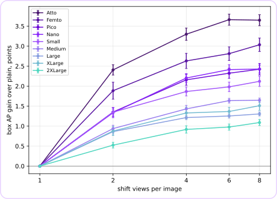

Test-Time Augmentation¶
Test-time augmentation (TTA) predicts each image several times, as slightly different views, and averages the matching detections. It is off by default and needs no retraining. This page shows how to turn it on, then what it bought and what it cost across every RF-DETR detection size on full COCO val2017, so you can decide whether a given model should use it.
Turn It On¶
Pass tta to RFDETRInference.predict. Leaving it out, or passing tta=None, is the plain prediction.
from rfdetr import RFDETRInference, RFDETRSmall, TTAConfig
predictor = RFDETRInference(RFDETRSmall())
detections = predictor.predict("image.jpg", threshold=0.5, tta=TTAConfig())
TTAConfig() is the recommended recipe: one native-scale view and three zooms on padded canvases. Ask for another mix with explicit fields. Views add up, they do not multiply, and flip doubles the total.
| Config | Views | What runs |
|---|---|---|
TTAConfig() |
4 | the native-scale view and zooms of 0.85, 1.25 and 1.5 |
TTAConfig(zoom=(1.25,)) |
2 | the native-scale view and a 1.25 zoom, the cheapest zoom recipe |
TTAConfig(shift=4) |
4 | the image moved by 0, 4, 8 and 12 pixels of a 16-pixel patch |
TTAConfig(shift=2, zoom=(1.25, 1.5)) |
4 | two shifts and two zooms |
TTAConfig(shift=2, flip=True) |
4 | two shifts, each also mirrored left to right |
TTAConfig(zoom=()) |
1 | the plain prediction |
With zoom omitted, shift > 1 or flip=True suppresses the default zooms. Explicit shift=1 or flip=False with the other default retains the three zooms. Pass zoom=() with the default shift and flip values for plain prediction.
- Cost: every view adds a row on a padded canvas. Larger zooms can increase canvas size and cost per row.
- Batching: on CUDA, views with the same canvas size can share a forward pass. On MPS and CPU each view is its own pass, so latency grows about linearly with the view count.
- Fusion: a detection of one view matches a detection of another when both have the same class and a box IoU above 0.6. The fused box is the mean box, and the fused score is the sum of the matched scores divided by the number of views, so a view that missed the object counts as 0.
thresholdapplies only to the fused score. Fused scores sit a little lower than single-view ones, so choose the threshold with TTA on. Segmentation masks keep the pixels that at least half of the matched masks cover. - Limits: keypoint models, an
inference()snapshot and exported runtimes refuse several views before any image is read, because they fix their resolution or batch size. Mirroring assumes an object keeps its class when the image is flipped; do not useflipfor arrows or turn signs. - Related:
RFDETR.predict(..., shift_tta=N)is the older option that averagesNshifted passes. It uses the same CUDA batching rules and is described on the Detection page.
How the Views Become a Batch¶
A call to predict takes one image or a list of images, and every image gets its own views. On CUDA the views of one canvas size go through the network together, so the views are rows of a batch.

- One image per call: the default four views of RF-DETR Small form three canvas groups. The 544-pixel group has two rows. The 640- and 768-pixel groups each have one row.
- Several images per call: each group has the number of input images times its view count. The forward pixel budget limits how many whole views of a shape can run together. Every forward still carries at least one view of every input, so that view alone can exceed the budget. Segmentation also retains mapped mask logits until fusion.
- Not CUDA: on MPS and CPU each view is its own forward pass, and a batch of images is processed view by view.
- Why two latency settings below: a server may send one image at a time, where the views fill the batch, or collect several images, where the batch is already full before the views are added. The tables and figures show both, always as the time per image.
What Was Measured¶
A sweep over every released detection size, from Atto to 2XLarge, on all 5000 COCO val2017 images, with the plain prediction as the baseline.
- Accuracy: box AP at confidence threshold 0.001, scored through
RFDETRInference.predictand the stored predictions. The images are also split into 5 interleaved folds. The gain of a recipe over the plain prediction is paired, scored on the same images, and its error is the fold-to-fold standard error, so a gain well inside it is not a gain. - Latency: the median of 50 calls after 10 warm-up calls at threshold 0.5, in milliseconds, for two call shapes:
predictwith one image, andpredictwith a list of eight images. A call covers preprocessing, the forward pass, mapping back and fusing. The eight-image time is divided by 8, so both settings are the time per image. - Recipes: the shift sweep covers all nine sizes with 1, 2, 4, 6 and 8 views. The flip, zoom and shift + zoom recipes and the runtime switches were measured for Nano, Small and Large, and the cost breakdown and memory for Atto to 2XLarge.
The cookbook reruns the shift sweep, the two zoom recipes and both figures on your hardware. The flip and shift plus zoom recipes, the stage timers, memory and the runtime switches come from the extended version of the same notebook at commit e0131796.
Accuracy: What Views Add¶
Shift views add box AP for every size. The gain is large for the small models, shrinks with size, and has mostly arrived by four views.
| Model | 1 view | 2 views | 4 views | 6 views | 8 views | Gain at 8 views |
|---|---|---|---|---|---|---|
| Atto | 30.67 | 33.08 | 33.97 | 34.34 | 34.32 | +3.65 ± 0.14 |
| Femto | 37.64 | 39.52 | 40.27 | 40.45 | 40.67 | +3.04 ± 0.17 |
| Pico | 41.65 | 43.01 | 43.81 | 43.98 | 44.08 | +2.42 ± 0.14 |
| Nano | 48.02 | 49.35 | 50.22 | 50.43 | 50.45 | +2.43 ± 0.10 |
| Small | 52.82 | 54.17 | 54.68 | 54.80 | 54.94 | +2.12 ± 0.13 |
| Medium | 54.69 | 55.63 | 56.12 | 56.33 | 56.34 | +1.65 ± 0.05 |
| Large | 56.56 | 57.42 | 57.78 | 57.82 | 57.87 | +1.31 ± 0.05 |
| XLarge | 58.69 | 59.57 | 60.02 | 60.06 | 60.20 | +1.51 ± 0.12 |
| 2XLarge | 60.09 | 60.62 | 61.01 | 61.07 | 61.18 | +1.09 ± 0.07 |
Box AP in percent for shift views, with the paired gain over one view and its fold-to-fold standard error.

- Size: the gain at eight views falls from +3.65 for Atto to +1.09 for 2XLarge. XLarge sits slightly above the trend.
- Saturation: four views give 84 to 92 percent of the eight-view gain for every size. Going from 4 to 8 adds 0.1 to 0.4 points.
- Steadiness: the score of a confident detection moves by a fraction of a point when the object shifts inside a patch. For each recipe, the probe selected detections with an unshifted score of at least 0.3, then averaged their score standard deviation across four sub-patch shifts on 100 images. The plain and eight-view recipes measured 0.097 and 0.023 for Atto, 0.071 and 0.018 for Nano, and 0.044 and 0.012 for Large. For a shifted input, the probe used the highest score among boxes matching the reference class with IoU above 0.6, and used zero for a miss. Each recipe can select a different set of detections. The probe did not count threshold crossings.
Cost: Latency and Memory¶
Views cost latency that grows with the model, because a small model is limited by launching its kernels and a large one by its arithmetic. The extra work around the network is small.
| Model | predict(1 image): 1 view | 4 views | 8 views | 8 views, vs 1 view | predict(8 images): 1 view | 4 views | 8 views |
|---|---|---|---|---|---|---|---|
| Atto | 5.15 | 7.76 | 7.39 | 1.4x | 0.90 | 2.00 | 3.30 |
| Femto | 6.51 | 8.24 | 9.28 | 1.4x | 1.11 | 2.47 | 4.37 |
| Pico | 6.89 | 8.73 | 10.48 | 1.5x | 1.26 | 3.56 | 6.30 |
| Nano | 5.66 | 8.63 | 10.59 | 1.9x | 1.27 | 3.66 | 6.55 |
| Small | 6.19 | 10.74 | 14.84 | 2.4x | 1.80 | 5.97 | 10.73 |
| Medium | 6.80 | 11.82 | 17.25 | 2.5x | 2.02 | 7.13 | 13.53 |
| Large | 7.86 | 15.98 | 25.23 | 3.2x | 2.66 | 11.99 | 23.19 |
| XLarge | 10.04 | 21.76 | 36.29 | 3.6x | 4.38 | 16.73 | 32.63 |
| 2XLarge | 11.19 | 29.96 | 51.77 | 4.6x | 5.57 | 25.36 | 49.91 |
Latency per image in milliseconds for shift views on an eager PyTorch predictor. The first four columns are a call with one image, whose views are the batch. The last three are a call with eight images, totaling 8 × V view rows, with time divided by eight.
- One image in the call: eight views of Atto cost 1.4 times one view, and eight views of 2XLarge cost 4.6 times. Small models have idle capacity that the extra rows fill.
- Eight images in the call: the device is already busy, so the cost per image grows almost with the number of views, 3.7 times for Atto and 9.0 times for 2XLarge at eight views.
- Zoom costs more per view: the canvas of a zoomed view is larger. At four views on Nano a call takes 8.6 ms with shifts and 17.1 ms with the default zooms.
- Optimized snapshot: the historical run measured
model.inference()at 1.9 to 7.7 ms while repeating one image. Eager timing cycled through distinct images. The cookbook now uses the same image sequence for both.
![Box AP against latency per image, one curve per model size. The left panel is predict with one image with V view rows. The right panel is predict with eight images and 8 × V total view rows, with time divided by eight. Solid curves are 1, 2, 4, 6 and 8 shift views, labelled at 2 and 8. Dashed curves with square markers are the 2-view and 4-view zoom recipes, measured for Nano, Small and Large at one image per call. Every curve rises slowly while moving right, and the curve of a larger model starts above and to the left of the end of the curve of a smaller one.](../../assets/tta/tta-ap-latency.svg)
Memory. The peak extra CUDA memory of one call grows with the rows in flight and stays small. For one image per call it rises from 7 MiB (Atto, 1 view) to 74 MiB at eight views, and from 146 MiB (2XLarge, 1 view) to 1364 MiB at eight views. In the measured shift sweep with eight images per call, peak extra memory leveled off between 0.35 and 1.7 GiB as the scheduler split views across forwards.
Where the time goes. At eight views the work around the network is about 2.1 ms per call whatever the model: placing the views 0.17 to 0.20 ms, mapping boxes back 0.47 to 0.50, decoding 0.48 to 0.52 and fusing 0.80 to 0.98. That is 26 percent of an Atto call and 4 percent of a 2XLarge call. The rest of the cost over plain batching is the larger canvas: V views of one image take 0.2 to 2.0 ms more than a batch of V images up to Medium, and 1.2 to 7.2 ms more for Large to 2XLarge.
Ablation: Which Views to Use¶
The same number of views can be shifts, mirrored copies, zoomed copies or a mix. Gain over the plain prediction in box AP points, with latency of one image per call in brackets.
| Views | Recipe | Nano | Small | Medium | Large |
|---|---|---|---|---|---|
| 1 | plain | 48.02 AP (5.7 ms) | 52.82 AP (6.2 ms) | 54.69 AP (6.8 ms) | 56.56 AP (7.9 ms) |
| 2 | flip | +0.75 (8.2 ms) | +0.85 (9.1 ms) | not measured | +0.48 (11.8 ms) |
| 2 | shift | +1.33 (7.2 ms) | +1.35 (8.8 ms) | +0.94 (9.8 ms) | +0.86 (11.8 ms) |
| 2 | zoom (1.25,) |
+2.83 (11.7 ms) | +2.41 (14.0 ms) | not measured | +1.30 (17.5 ms) |
| 4 | shift | +2.20 (8.6 ms) | +1.87 (10.7 ms) | +1.43 (11.8 ms) | +1.21 (16.0 ms) |
| 4 | shift + flip | +2.21 (8.5 ms) | +2.05 (10.8 ms) | not measured | +1.37 (16.1 ms) |
| 4 | zoom, the default | +4.02 (17.1 ms) | +3.11 (21.6 ms) | not measured | +1.96 (30.9 ms) |
| 4 | shift + zoom | +4.28 (16.8 ms) | +3.46 (21.4 ms) | not measured | +2.05 (30.9 ms) |
| 8 | shift | +2.43 (10.6 ms) | +2.12 (14.8 ms) | +1.65 (17.3 ms) | +1.31 (25.2 ms) |
| 8 | shift + flip | +2.77 (10.6 ms) | +2.51 (15.0 ms) | not measured | +1.59 (25.3 ms) |
| 8 | shift + zoom | +3.97 (23.4 ms) | +3.15 (29.4 ms) | not measured | +1.95 (44.0 ms) |
Medium was swept with shift views only in the extended run, so its flip and zoom cells are empty; the cookbook measures its zoom recipes. Standard errors of the paired gains are 0.05 to 0.18 points. The recipes are shift=2, flip=True and shift=4, flip=True for shift + flip, zoom=(0.85, 1.25, 1.5) for the default, shift=2, zoom=(1.25, 1.5) and shift=4, zoom=(0.85, 1.15, 1.3, 1.5) for shift + zoom.
- Zoom beats shift per view. At the same view count zoom adds about twice the AP of shifts, +4.02 against +2.20 on Nano at four views. A plausible reason is that a zoomed view shows objects at another scale, while a shift only changes where an object falls inside a patch; this was not tested separately. It is why zoom is the default.
- Zoom costs about twice as much. Four zoom views take 17.1 ms on Nano against 8.6 ms for four shifts, because the canvas is larger. Per millisecond added, shifts buy more AP. At a similar latency zoom is still ahead by 0.05 to 0.4 points: two zoom views on Nano take 11.7 ms for +2.83, and eight shift views take 10.6 ms for +2.43.
- Flip alone is weak. One mirrored copy adds 0.5 to 0.9 points, less than one shifted copy. Mirroring the shifts doubles the views at no extra latency in the rows above and adds 0.0 to 0.4 points over the same number of unmirrored shifts, a small gain, and only for classes that survive mirroring.
- Shift plus zoom is the best four-view recipe, by a little. It beats the default by 0.09 to 0.35 points at the same latency. The default is the simpler one to state and explain.
- More views can lower AP. Eight shift + zoom views are worse than four on all three sizes (3.97 against 4.28 on Nano, 1.95 against 2.05 on Large). The fused score is the mean over all views with a missed view counting as 0, so a weak view dilutes a strong one. Stop at four views for zoom recipes.
Should You Use a Larger Model Instead?¶
For a single image per call, usually yes. At one image per call and at eight, no smaller model with views is both faster and more accurate than a larger model without them. Plain Femto (37.64 AP, 6.5 ms) beats Atto with eight views (34.32 AP, 7.4 ms), plain Small (52.82 AP, 6.2 ms) beats Nano with shift + zoom at four views (52.30 AP, 16.8 ms), and plain XLarge (58.69 AP, 10.0 ms) beats Large with the default zooms (58.53 AP, 30.9 ms). The plain models from Atto to 2XLarge form the whole latency and accuracy frontier up to 2XLarge. The only points beyond it are 2XLarge with views, reaching 61.18 AP at 51.8 ms with eight shift views.
That result was measured on a GPU where a small forward pass is limited by kernel launches, which flatters a larger model. On a GPU limited by arithmetic, or on a CPU, a larger model costs more and the comparison can change; it was not measured here.
Runtime Switches¶
TF32 matrix multiplies (torch.set_float32_matmul_precision("high")) sped the calls up 1.21 to 1.45 times for Nano, Small and Large, at one and four shift views and at one and eight images per call. Box AP on the first 1000 images changed by at most 0.08 points in either direction (Nano 1 view 50.62 to 50.58, Large 1 view 58.60 to 58.68). cuDNN autotuning (torch.backends.cudnn.benchmark) added nothing on top. RF-DETR does not set either switch for you; they change float32 precision for the whole process, so check AP on your own data first.
Conclusions and Suggestions¶
- Use TTA when the model size is fixed. Offline labeling, evaluation, a model already at the largest size, or a case where a score that swings across the threshold is the problem. For a latency-limited service, a larger model gives more AP for the same time.
- Start with
TTAConfig(). It adds 2.0 to 4.0 points on Nano, Small and Large for 3 to 4 times the latency of one plain call.TTAConfig(zoom=(1.25,))is the cheaper step, +1.3 to +2.8 points for 2.1 to 2.3 times the latency. - Measure steadiness at your threshold. The study reports score spread for detections selected separately by each shift recipe. Measure threshold crossings on matched detections if those crossings affect your use case.
- Do not go past four views. Four shift views give 84 to 92 percent of the eight-view gain, and eight shift + zoom views are worse than four.
- Re-tune the threshold. Fused scores are lower than single-view ones. Pick
thresholdwith TTA on. - Check flip on your classes. Skip it for anything with a left-right meaning.
- Measure on your hardware. Run the cookbook with your device, and compare against the next larger model before committing.
What Is Not Established¶
- Behavior on a GPU limited by arithmetic, such as a T4, and on a CPU, where views are not batched.
- Zoom, flip and shift + zoom recipes for XLarge and 2XLarge, and for segmentation models.
- A comparison with the older sequential
shift_ttapath ondevelop, and a padded zero-offset control that separates the effect of the larger canvas from the effect of the shift. - Accuracy on fine-tuned datasets. All AP numbers are the pretrained COCO checkpoints on COCO val2017.
Run Details¶
Hardware: NVIDIA RTX PRO 6000 Blackwell Server Edition (Colab) | rfdetr 1.13.0.dev0 at commit e0131796 | rfdetr_plus 1.3.0 | PyTorch 2.14.1+cu130 | supervision 0.32.1 | faster-coco-eval 1.8.1 | Python 3.13.16 | run started 2026-11-24 23:05 UTC | box AP on 5000 COCO val2017 images at threshold 0.001 in 5 folds, latency at threshold 0.5, median of 50 timed calls after 10 warm-up calls, eager PyTorch FP32 path with RFDETRInference on the live model.